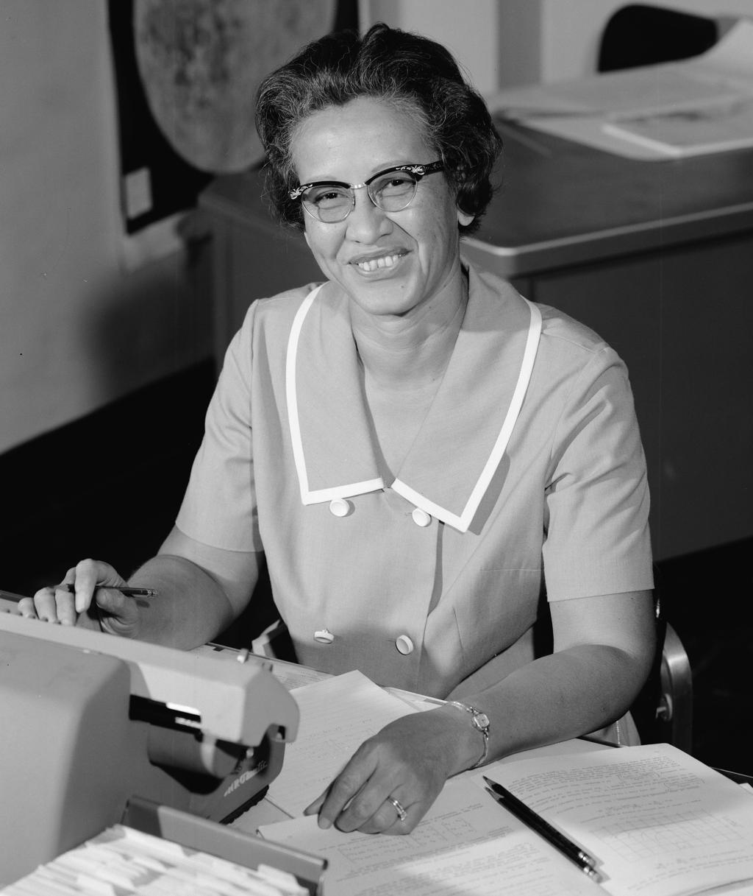
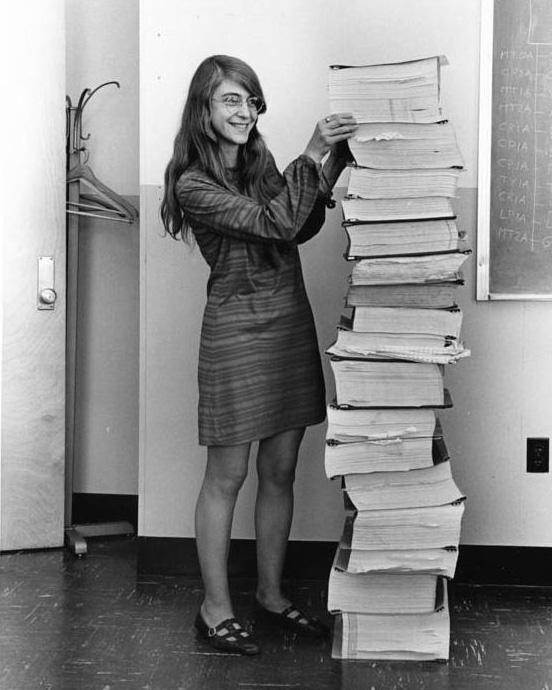

Ada Lovelace
.jpg)
Ada Lovelace (1815–1852) foi uma matemática britânica considerada a primeira programadora da história; filha de Lord Byron, colaborou com Charles Babbage na criação da Máquina Analítica, escrevendo o primeiro algoritmo para ser processado por.
Grace Hopper

Grace Hopper (1906–1992) foi uma cientista da computação e oficial da Marinha dos Estados Unidos, conhecida por desenvolver um dos primeiros compiladores da história; seu trabalho facilitou a criação de linguagens de programação mais acessíveis
Katherine

Katherine Johnson (1918–2020) foi uma matemática norte-americana que trabalhou na NASA, sendo fundamental no cálculo de trajetórias de voos espaciais; suas contribuições foram essenciais para o sucesso de missões como a Apollo 11, garantind
Hedy Lamarr

Hedy Lamarr (1914–2000) foi uma atriz e inventora austríaca que co-desenvolveu uma tecnologia de comunicação por salto de frequência; essa inovação serviu de base para tecnologias modernas como Wi-Fi, Bluetooth e GPS.
História
As mulheres tiveram um papel essencial no desenvolvimento da computação, embora, por muito tempo, suas contribuições tenham sido invisibilizadas ou pouco reconhecidas. Desde o século XIX, com Ada Lovelace considerada a primeira programadora da história por ter criado o primeiro algoritmo destinado a ser processado por uma máquina , já era possível perceber a importância feminina na construção das bases da tecnologia moderna. Ao longo do tempo, especialmente durante a Segunda Guerra Mundial, milhares de mulheres trabalharam diretamente com os primeiros computadores, realizando cálculos complexos e programando máquinas fundamentais para estratégias militares e científicas. Mesmo com essas contribuições significativas, a história da computação acabou sendo, em grande parte, atribuída aos homens, o que contribuiu para a diminuição da participação feminina na área ao longo das décadas seguintes. Atualmente, esse cenário vem sendo transformado. Diversas iniciativas, projetos educacionais e movimentos sociais têm como objetivo incentivar e ampliar a presença de mulheres na tecnologia. Além de promover igualdade de oportunidades, essa diversidade é fundamental para a inovação, pois diferentes perspectivas contribuem para soluções mais criativas e eficientes. Assim, reconhecer a importância das mulheres na computação não é apenas resgatar a história, mas também construir um futuro mais justo, inclusivo e inovador, onde o talento e a capacidade sejam valorizados independentemente de gênero.
1843

Ada Lovelace cria o primeiro algoritmo
Ada Lovelace cria o primeiro algoritmo da história para a Máquina Analítica, sendo considerada a primeira programadora.
1940's

Mulheres na programação
Durante a Segunda Guerra, mulheres programavam os primeiros computadores e faziam cálculos militares complexos.
1952

O primeiro compilador
Grace Hopper cria um dos primeiros compiladores, permitindo linguagens mais acessíveis.
Mulheres na Computação
Projeto informativo sobre o papel feminino na história da computação.
Busque:
Créditos
Desenvolvido por Silvio e Murilo